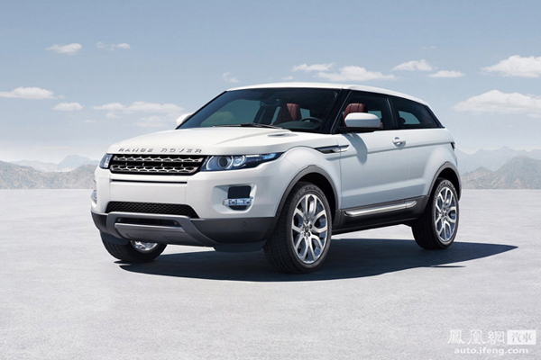
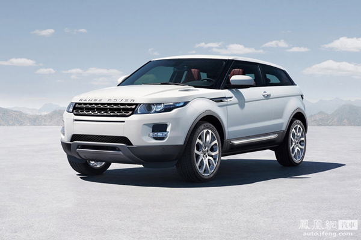

英国汽车工业
从汽车发明的一百多年里，英国车一直被认为是代表着汽车工艺的极致以及品位、价值、豪华、典雅这几诸多词语在汽车上最完美的体现。英国的克鲁郡(Crewe)至今秉承着传统的造车艺术，经验丰富的工匠始终以手工进行装嵌。绝大部分的工匠都有超过30年以上的丰富经验，造车技术代代相传，工艺千锤百炼，品质完美无瑕，处处流露出英国传统造车艺术的精髓：幽雅、灵动、恒久精炼。

从汽车发明的一百多年里，英国车一直被认为是代表着汽车工艺的极致以及品位、价值、豪华、典雅这几诸多词语在汽车上最完美的体现。英国的克鲁郡(Crewe)至今秉承着传统的造车艺术，经验丰富的工匠始终以手工进行装嵌。绝大部分的工匠都有超过30年以上的丰富经验，造车技术代代相传，工艺千锤百炼，品质完美无瑕，处处流露出英国传统造车艺术的精髓：幽雅、灵动、恒久精炼。
